Bayesian spatial models: a walkthrough¶
By the end of this lesson you will have fitted six models to one dataset, followed the package’s specification tests from OLS to the model they point to, and used Bayes factors to rank the models those tests leave standing.
You do not need to know the spatial econometrics beforehand — each model is introduced when the previous one runs out of road. Work through the cells in order; every step produces something you can look at.
Every model here accepts a formula and a weights graph:
SAR(formula="y ~ x1 + x2", data=gdf, W=W)
The equations behind each one are in Supported Models if you want them; you will not need them to follow along.
import arviz as az
import geodatasets
import geopandas as gpd
import matplotlib.pyplot as plt
import pandas as pd
from libpysal.graph import Graph
from neighbayes.diagnostics.bayesfactor import bayes_factor_compare_models
from neighbayes.models import OLS, SAR, SDEM, SDM, SEM, SLX
az.style.use("arviz-variat")
/home/runner/micromamba/envs/test/lib/python3.14/site-packages/tqdm/auto.py:21: TqdmWarning: IProgress not found. Please update jupyter and ipywidgets. See https://ipywidgets.readthedocs.io/en/stable/user_install.html
from .autonotebook import tqdm as notebook_tqdm
# Load sample spatial dataset
gdf = gpd.read_file(geodatasets.data.geoda.airbnb.url)
xcols = ["poverty", "rev_rating", "num_spots", "crowded"]
ycol = "price_pp"
gdf = gdf.dropna(subset=xcols + [ycol]).copy()
# Build contiguity graph (queen)
W = Graph.build_contiguity(gdf, rook=False).transform("r")
print(f"Observations: {len(gdf)}")
print(f"Predictors: {xcols}")
Observations: 67
Predictors: ['poverty', 'rev_rating', 'num_spots', 'crowded']
Helper Functions
To keep each model section focused, we use utility functions to:
fit with consistent MCMC settings,
print posterior summaries,
tabulate direct/indirect/total effects.
For a quick pedagogical run, we use small draw counts. Increase these for real inference.
def fit_and_report(model_cls, formula, data, W, draws=400, tune=400, chains=4, seed=42):
"""Fit a spatial model and return (model, summary, effects_df).
Uses minimal MCMC settings for pedagogical demonstration.
Increase draws/tune for real analyses.
"""
model = model_cls(formula=formula, data=data, W=W, logdet_method="eigenvalue")
model.fit(
draws=draws,
tune=tune,
chains=chains,
random_seed=seed,
progressbar=False,
idata_kwargs={"log_likelihood": True},
)
summary = model.summary(round_to=3)
effects_df = pd.DataFrame(model.impacts())
return model, summary, effects_df
Convergence Diagnostics Helper
For each fitted model, we will inspect:
r_hat(target close to 1.00)effective sample sizes (
ess_bulk,ess_tail)trace plots for key parameters.
def diagnostics_table(idata, var_names):
"""Show key MCMC diagnostics for the given parameters."""
cols = ["mean", "sd", "ess_bulk", "ess_tail", "r_hat"]
return az.summary(idata, var_names=var_names, round_to=3)[cols]
def show_trace(idata, var_names, title):
"""Plot trace plots for the given parameters."""
az.plot_trace_dist(idata, var_names=var_names)
plt.suptitle(title, y=1.02)
plt.tight_layout()
plt.show()
The models, one at a time¶
Start with OLS, and see what it misses¶
Model:
ols = OLS(
formula="price_pp ~ poverty + rev_rating + num_spots + crowded",
data=gdf,
W=W,
)
olsfit = ols.fit(
draws=400,
tune=400,
chains=4,
random_seed=42,
progressbar=False,
idata_kwargs={"log_likelihood": True},
)
Initializing NUTS using jitter+adapt_diag...
Multiprocess sampling (4 chains in 2 jobs)
NUTS: [beta, sigma2]
/home/runner/micromamba/envs/test/lib/python3.14/site-packages/pymc/sampling/mcmc.py:1185: FutureWarning: Passing `log_likelihood` via `idata_kwargs` is deprecated and will be removed in future versions. Call `pm.compute_log_likelihood(idata)` instead.
return _sample_return(
Sampling 4 chains for 400 tune and 400 draw iterations (1_600 + 1_600 draws total) took 8 seconds.
ols.summary()
| mean | sd | eti89_lb | eti89_ub | ess_bulk | ess_tail | r_hat | mcse_mean | mcse_sd | |
|---|---|---|---|---|---|---|---|---|---|
| Intercept | 34.763708 | 59.823192 | -59.125149 | 131.164896 | 611.53875 | 816.780217 | 1.006463 | 2.418707 | 1.360297 |
| poverty | 0.196023 | 0.339725 | -0.355202 | 0.717252 | 1072.681924 | 1009.445722 | 1.005056 | 0.010383 | 0.008059 |
| rev_rating | 0.385673 | 0.630839 | -0.638137 | 1.350684 | 622.215067 | 882.222178 | 1.005104 | 0.025336 | 0.014148 |
| num_spots | 0.118578 | 0.023736 | 0.080593 | 0.157859 | 1165.66007 | 1143.410725 | 1.003821 | 0.000698 | 0.000582 |
| crowded | -2.225471 | 0.949183 | -3.731029 | -0.688753 | 1262.121867 | 1089.501026 | 1.000628 | 0.02679 | 0.021389 |
| sigma2 | 759 | 131 | 570 | 980 | 1221 | 1030 | 1.00 | 3.9 | 4.3 |
| sigma | 27.4 | 2.3 | 24 | 31 | 1221 | 1030 | 1.00 | 0.068 | 0.066 |
Add the neighbors’ covariates (SLX)¶
Model:
Interpretation:
betacaptures local covariate effects.thetacaptures neighbor-covariate spillovers.No spatial lag on \(y\), so no autoregressive propagation through outcomes.
slx, summary_slx, effects_slx = fit_and_report(
SLX,
formula="price_pp ~ poverty + rev_rating + num_spots + crowded",
data=gdf,
W=W,
)
display(summary_slx)
display(effects_slx)
Initializing NUTS using jitter+adapt_diag...
Multiprocess sampling (4 chains in 2 jobs)
NUTS: [beta, sigma2]
/home/runner/micromamba/envs/test/lib/python3.14/site-packages/pymc/sampling/mcmc.py:1185: FutureWarning: Passing `log_likelihood` via `idata_kwargs` is deprecated and will be removed in future versions. Call `pm.compute_log_likelihood(idata)` instead.
return _sample_return(
Sampling 4 chains for 400 tune and 400 draw iterations (1_600 + 1_600 draws total) took 14 seconds.
| mean | sd | eti89_lb | eti89_ub | ess_bulk | ess_tail | r_hat | mcse_mean | mcse_sd | |
|---|---|---|---|---|---|---|---|---|---|
| Intercept | 91.889 | 81.044 | -33.866 | 220.050 | 1091.975 | 968.390 | 1.002 | 2.457 | 2.136 |
| poverty | -0.616 | 0.447 | -1.303 | 0.112 | 957.933 | 941.009 | 1.004 | 0.014 | 0.013 |
| rev_rating | 0.572 | 0.745 | -0.647 | 1.757 | 1094.363 | 975.791 | 1.004 | 0.022 | 0.016 |
| num_spots | 0.022 | 0.032 | -0.028 | 0.073 | 1215.259 | 928.928 | 1.003 | 0.001 | 0.001 |
| crowded | -1.026 | 1.188 | -2.946 | 0.880 | 987.334 | 1093.289 | 1.002 | 0.038 | 0.029 |
| W*poverty | 1.283 | 0.610 | 0.291 | 2.235 | 991.958 | 968.706 | 1.008 | 0.019 | 0.017 |
| W*rev_rating | -0.958 | 0.961 | -2.513 | 0.555 | 964.841 | 1044.594 | 1.003 | 0.031 | 0.023 |
| W*num_spots | 0.194 | 0.048 | 0.119 | 0.269 | 1179.373 | 939.468 | 1.000 | 0.001 | 0.001 |
| W*crowded | -1.709 | 1.586 | -4.177 | 0.871 | 1076.347 | 1207.006 | 1.001 | 0.049 | 0.039 |
| sigma2 | 603.463 | 111.094 | 454.764 | 797.419 | 1368.931 | 992.446 | 1.004 | 3.002 | 2.951 |
| sigma | 24.465 | 2.217 | 21.325 | 28.239 | 1368.931 | 992.446 | 1.004 | 0.060 | 0.054 |
| direct | direct_ci_lower | direct_ci_upper | direct_pvalue | indirect | indirect_ci_lower | indirect_ci_upper | indirect_pvalue | total | total_ci_lower | total_ci_upper | total_pvalue | |
|---|---|---|---|---|---|---|---|---|---|---|---|---|
| variable | ||||||||||||
| poverty | -0.616200 | -1.506217 | 0.273421 | 0.17500 | 1.282567 | 0.057263 | 2.426661 | 0.03750 | 0.666367 | -0.165650 | 1.444318 | 0.11625 |
| rev_rating | 0.572276 | -0.879610 | 2.006558 | 0.45250 | -0.958432 | -2.843965 | 1.012002 | 0.30625 | -0.386156 | -2.102585 | 1.280250 | 0.66250 |
| num_spots | 0.021658 | -0.038533 | 0.084204 | 0.50125 | 0.194157 | 0.102144 | 0.283095 | 0.00125 | 0.215815 | 0.150998 | 0.278996 | 0.00000 |
| crowded | -1.026016 | -3.310090 | 1.407438 | 0.34625 | -1.708557 | -4.906957 | 1.574295 | 0.28500 | -2.734573 | -5.091472 | -0.429170 | 0.02625 |
az.plot_forest(slx.inference_data)
display(diagnostics_table(slx.inference_data, ["beta", "sigma"]))
show_trace(slx.inference_data, ["sigma"], "SLX Trace: sigma")
| mean | sd | ess_bulk | ess_tail | r_hat | |
|---|---|---|---|---|---|
| beta[Intercept] | 91.889 | 81.044 | 1091.975 | 968.390 | 1.002 |
| beta[poverty] | -0.616 | 0.447 | 957.933 | 941.009 | 1.004 |
| beta[rev_rating] | 0.572 | 0.745 | 1094.363 | 975.791 | 1.004 |
| beta[num_spots] | 0.022 | 0.032 | 1215.259 | 928.928 | 1.003 |
| beta[crowded] | -1.026 | 1.188 | 987.334 | 1093.289 | 1.002 |
| beta[W*poverty] | 1.283 | 0.610 | 991.958 | 968.706 | 1.008 |
| beta[W*rev_rating] | -0.958 | 0.961 | 964.841 | 1044.594 | 1.003 |
| beta[W*num_spots] | 0.194 | 0.048 | 1179.373 | 939.468 | 1.000 |
| beta[W*crowded] | -1.709 | 1.586 | 1076.347 | 1207.006 | 1.001 |
| sigma | 24.465 | 2.217 | 1368.931 | 992.446 | 1.004 |
/tmp/ipykernel_9259/4086335195.py:11: UserWarning: The figure layout has changed to tight
plt.tight_layout()
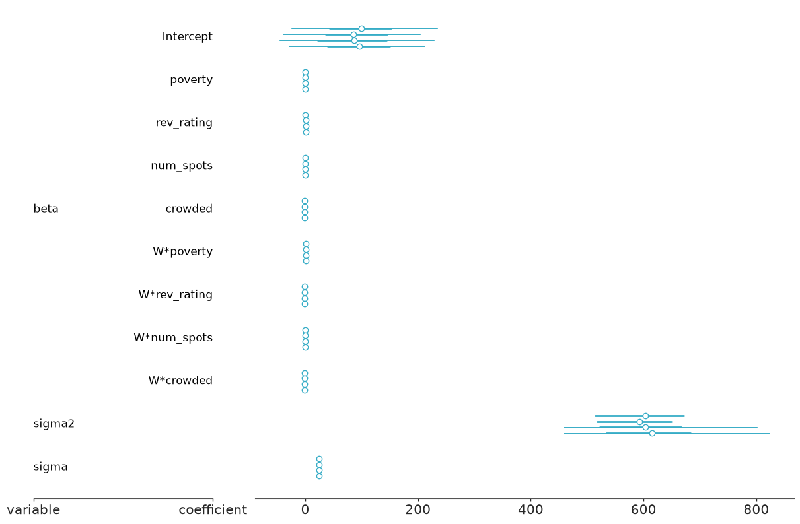
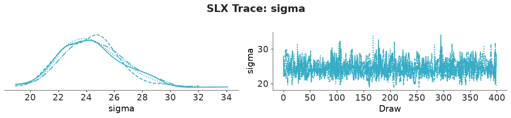
Let the outcome itself spill over (SAR)¶
Model:
Interpretation:
\(\rho\) controls feedback from neighboring outcomes.
Effects are amplified through \((I - \rho W)^{-1}\), so direct and indirect impacts differ from raw \(\beta\).
sar, summary_sar, effects_sar = fit_and_report(
SAR,
formula="price_pp ~ poverty + rev_rating + num_spots + crowded",
data=gdf,
W=W,
)
summary_sar
| mean | sd | eti89_lb | eti89_ub | ess_bulk | ess_tail | r_hat | mcse_mean | mcse_sd | |
|---|---|---|---|---|---|---|---|---|---|
| rho | 0.418 | 0.138 | 0.184 | 0.635 | 1519.033 | 1069.591 | 1.003 | 0.004 | 0.003 |
| sigma | 25.465 | 2.255 | 22.213 | 29.296 | 1332.135 | 1417.126 | 1.001 | 0.062 | 0.048 |
| sigma2 | 653.563 | 117.805 | 493.421 | 858.259 | 1332.135 | 1417.126 | 1.001 | 3.225 | 2.886 |
| Intercept | 16.418 | 59.996 | -80.017 | 110.194 | 1492.837 | 1397.338 | 1.001 | 1.554 | 1.029 |
| poverty | 0.033 | 0.315 | -0.466 | 0.539 | 1632.631 | 1580.671 | 1.000 | 0.008 | 0.005 |
| rev_rating | 0.292 | 0.637 | -0.728 | 1.323 | 1494.141 | 1380.342 | 1.000 | 0.017 | 0.011 |
| num_spots | 0.080 | 0.025 | 0.041 | 0.120 | 1340.165 | 1030.475 | 1.002 | 0.001 | 0.000 |
| crowded | -1.724 | 0.909 | -3.205 | -0.311 | 1646.961 | 1360.650 | 0.999 | 0.022 | 0.015 |
effects_sar
| direct | direct_ci_lower | direct_ci_upper | direct_pvalue | indirect | indirect_ci_lower | indirect_ci_upper | indirect_pvalue | total | total_ci_lower | total_ci_upper | total_pvalue | |
|---|---|---|---|---|---|---|---|---|---|---|---|---|
| variable | ||||||||||||
| poverty | 0.032706 | -0.622938 | 0.671614 | 0.92625 | -0.002793 | -0.617476 | 0.517858 | 0.93000 | 0.029914 | -1.192166 | 1.123371 | 0.92625 |
| rev_rating | 0.307479 | -1.062019 | 1.653670 | 0.63500 | 0.208360 | -0.879264 | 1.492031 | 0.63625 | 0.515838 | -1.786398 | 3.000290 | 0.63500 |
| num_spots | 0.084272 | 0.034008 | 0.133000 | 0.00125 | 0.056125 | 0.014487 | 0.127016 | 0.00500 | 0.140397 | 0.062615 | 0.232081 | 0.00125 |
| crowded | -1.817905 | -3.615882 | 0.062306 | 0.06125 | -1.264267 | -3.903660 | 0.057423 | 0.06500 | -3.082173 | -7.080459 | 0.105295 | 0.06125 |
az.plot_forest(sar.inference_data)
display(diagnostics_table(sar.inference_data, ["rho", "beta", "sigma"]))
show_trace(sar.inference_data, ["rho", "sigma"], "SAR Trace: rho, sigma")
| mean | sd | ess_bulk | ess_tail | r_hat | |
|---|---|---|---|---|---|
| rho | 0.418 | 0.138 | 1519.033 | 1069.591 | 1.003 |
| beta[Intercept] | 16.418 | 59.996 | 1492.837 | 1397.338 | 1.001 |
| beta[poverty] | 0.033 | 0.315 | 1632.631 | 1580.671 | 1.000 |
| beta[rev_rating] | 0.292 | 0.637 | 1494.141 | 1380.342 | 1.000 |
| beta[num_spots] | 0.080 | 0.025 | 1340.165 | 1030.475 | 1.002 |
| beta[crowded] | -1.724 | 0.909 | 1646.961 | 1360.650 | 0.999 |
| sigma | 25.465 | 2.255 | 1332.135 | 1417.126 | 1.001 |
/tmp/ipykernel_9259/4086335195.py:11: UserWarning: The figure layout has changed to tight
plt.tight_layout()
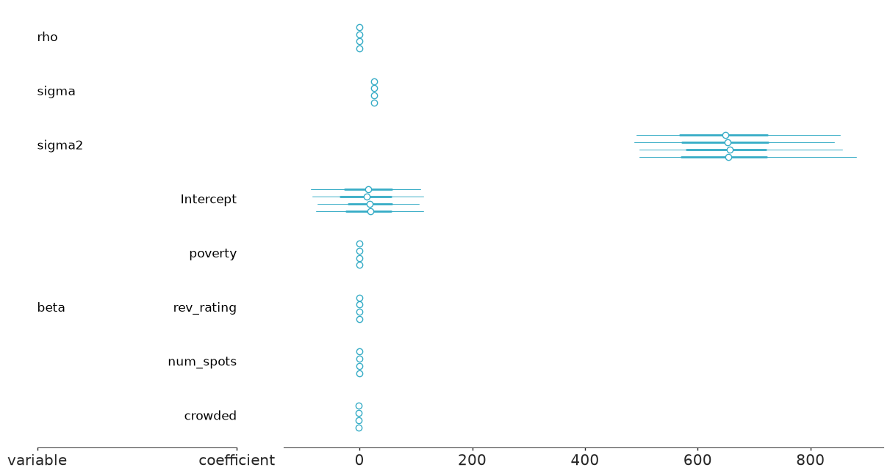
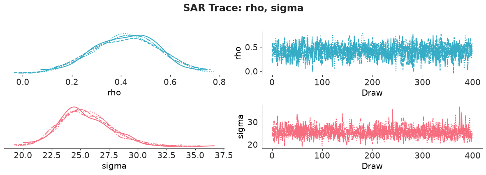
Treat the clustering as nuisance instead (SEM)¶
Model:
Interpretation:
Spatial dependence is moved to latent shocks rather than outcome feedback.
Useful when omitted spatial factors induce correlated residuals.
sem, summary_sem, effects_sem = fit_and_report(
SEM,
formula="price_pp ~ poverty + rev_rating + num_spots + crowded",
data=gdf,
W=W,
)
display(summary_sem)
display(effects_sem)
| mean | sd | eti89_lb | eti89_ub | ess_bulk | ess_tail | r_hat | mcse_mean | mcse_sd | |
|---|---|---|---|---|---|---|---|---|---|
| lam | 0.480 | 0.184 | 0.170 | 0.749 | 1374.669 | 1141.918 | 1.001 | 0.005 | 0.004 |
| sigma | 26.108 | 2.335 | 22.735 | 30.083 | 1324.222 | 1458.055 | 1.000 | 0.064 | 0.049 |
| sigma2 | 687.071 | 124.997 | 516.890 | 905.011 | 1324.222 | 1458.055 | 1.000 | 3.431 | 3.043 |
| Intercept | 21.119 | 58.232 | -73.130 | 111.396 | 1493.287 | 1409.014 | 1.000 | 1.509 | 1.008 |
| poverty | -0.154 | 0.442 | -0.868 | 0.526 | 1613.520 | 1541.031 | 1.000 | 0.011 | 0.008 |
| rev_rating | 0.608 | 0.629 | -0.385 | 1.619 | 1459.695 | 1449.053 | 1.001 | 0.016 | 0.011 |
| num_spots | 0.074 | 0.035 | 0.017 | 0.129 | 1242.783 | 1384.693 | 1.001 | 0.001 | 0.001 |
| crowded | -1.837 | 1.147 | -3.630 | -0.037 | 1648.413 | 1400.370 | 0.999 | 0.028 | 0.020 |
| direct | direct_ci_lower | direct_ci_upper | direct_pvalue | indirect | indirect_ci_lower | indirect_ci_upper | indirect_pvalue | total | total_ci_lower | total_ci_upper | total_pvalue | |
|---|---|---|---|---|---|---|---|---|---|---|---|---|
| variable | ||||||||||||
| poverty | -0.153856 | -1.053606 | 0.659105 | 0.74750 | 0.0 | 0.0 | 0.0 | 0.0 | -0.153856 | -1.053606 | 0.659105 | 0.74750 |
| rev_rating | 0.607892 | -0.663165 | 1.836423 | 0.32125 | 0.0 | 0.0 | 0.0 | 0.0 | 0.607892 | -0.663165 | 1.836423 | 0.32125 |
| num_spots | 0.073987 | 0.002207 | 0.140659 | 0.04500 | 0.0 | 0.0 | 0.0 | 0.0 | 0.073987 | 0.002207 | 0.140659 | 0.04500 |
| crowded | -1.837056 | -3.987026 | 0.463928 | 0.09875 | 0.0 | 0.0 | 0.0 | 0.0 | -1.837056 | -3.987026 | 0.463928 | 0.09875 |
az.plot_forest(sem.inference_data)
display(diagnostics_table(sem.inference_data, ["lam", "beta", "sigma"]))
show_trace(sem.inference_data, ["lam", "sigma"], "SEM Trace: lam, sigma")
| mean | sd | ess_bulk | ess_tail | r_hat | |
|---|---|---|---|---|---|
| lam | 0.480 | 0.184 | 1374.669 | 1141.918 | 1.001 |
| beta[Intercept] | 21.119 | 58.232 | 1493.287 | 1409.014 | 1.000 |
| beta[poverty] | -0.154 | 0.442 | 1613.520 | 1541.031 | 1.000 |
| beta[rev_rating] | 0.608 | 0.629 | 1459.695 | 1449.053 | 1.001 |
| beta[num_spots] | 0.074 | 0.035 | 1242.783 | 1384.693 | 1.001 |
| beta[crowded] | -1.837 | 1.147 | 1648.413 | 1400.370 | 0.999 |
| sigma | 26.108 | 2.335 | 1324.222 | 1458.055 | 1.000 |
/tmp/ipykernel_9259/4086335195.py:11: UserWarning: The figure layout has changed to tight
plt.tight_layout()
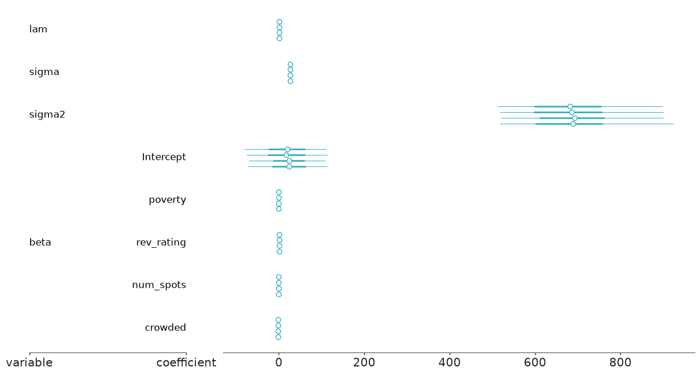
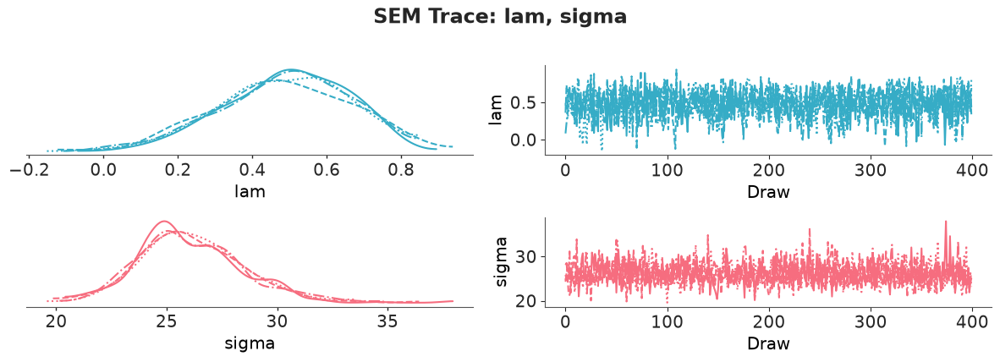
Combine both channels (SDM)¶
Model:
Interpretation:
Includes both outcome feedback and neighbor-covariate channels.
Often used as a flexible nesting model for SAR/SLX.
sdm, summary_sdm, effects_sdm = fit_and_report(
SDM,
formula="price_pp ~ poverty + rev_rating + num_spots + crowded",
data=gdf,
W=W,
)
display(summary_sdm)
display(effects_sdm)
| mean | sd | eti89_lb | eti89_ub | ess_bulk | ess_tail | r_hat | mcse_mean | mcse_sd | |
|---|---|---|---|---|---|---|---|---|---|
| rho | 0.231 | 0.166 | -0.042 | 0.494 | 1354.212 | 1167.087 | 0.999 | 0.005 | 0.004 |
| sigma | 24.097 | 2.170 | 20.877 | 27.765 | 1298.915 | 1347.281 | 1.000 | 0.060 | 0.046 |
| sigma2 | 585.385 | 107.091 | 435.843 | 770.897 | 1298.915 | 1347.281 | 1.000 | 2.971 | 2.622 |
| Intercept | 88.352 | 77.589 | -38.520 | 212.369 | 1395.206 | 1459.668 | 1.003 | 2.076 | 1.390 |
| poverty | -0.633 | 0.440 | -1.320 | 0.108 | 1624.727 | 1577.141 | 1.001 | 0.011 | 0.008 |
| rev_rating | 0.655 | 0.760 | -0.604 | 1.852 | 1563.954 | 1544.433 | 1.002 | 0.019 | 0.013 |
| num_spots | 0.016 | 0.031 | -0.034 | 0.065 | 1645.170 | 1466.492 | 1.001 | 0.001 | 0.001 |
| crowded | -0.968 | 1.185 | -2.835 | 0.872 | 1471.379 | 1520.123 | 1.003 | 0.031 | 0.022 |
| W*poverty | 1.161 | 0.611 | 0.182 | 2.133 | 1504.286 | 1577.247 | 1.002 | 0.016 | 0.013 |
| W*rev_rating | -1.152 | 0.961 | -2.714 | 0.351 | 1419.851 | 1543.374 | 1.003 | 0.026 | 0.017 |
| W*num_spots | 0.163 | 0.051 | 0.084 | 0.243 | 1707.284 | 1634.478 | 1.002 | 0.001 | 0.001 |
| W*crowded | -1.285 | 1.680 | -3.917 | 1.372 | 1482.007 | 1478.533 | 1.003 | 0.044 | 0.030 |
| direct | direct_ci_lower | direct_ci_upper | direct_pvalue | indirect | indirect_ci_lower | indirect_ci_upper | indirect_pvalue | total | total_ci_lower | total_ci_upper | total_pvalue | |
|---|---|---|---|---|---|---|---|---|---|---|---|---|
| variable | ||||||||||||
| poverty | -0.581459 | -1.392797 | 0.279056 | 0.18250 | 1.264712 | -0.163891 | 2.612387 | 0.08250 | 0.683253 | -0.474288 | 1.759628 | 0.19875 |
| rev_rating | 0.591500 | -0.902937 | 2.057116 | 0.42375 | -1.310813 | -3.722675 | 0.921897 | 0.26000 | -0.719313 | -3.369392 | 1.521286 | 0.54000 |
| num_spots | 0.025467 | -0.033511 | 0.083083 | 0.39875 | 0.211004 | 0.109350 | 0.319966 | 0.00000 | 0.236471 | 0.157886 | 0.331878 | 0.00000 |
| crowded | -1.051198 | -3.249380 | 1.122247 | 0.36625 | -1.923351 | -5.748177 | 1.886382 | 0.31375 | -2.974549 | -6.387703 | 0.311910 | 0.07875 |
az.plot_forest(sdm.inference_data)
display(diagnostics_table(sdm.inference_data, ["rho", "beta", "sigma"]))
show_trace(sdm.inference_data, ["rho", "sigma"], "SDM Trace: rho, sigma")
| mean | sd | ess_bulk | ess_tail | r_hat | |
|---|---|---|---|---|---|
| rho | 0.231 | 0.166 | 1354.212 | 1167.087 | 0.999 |
| beta[Intercept] | 88.352 | 77.589 | 1395.206 | 1459.668 | 1.003 |
| beta[poverty] | -0.633 | 0.440 | 1624.727 | 1577.141 | 1.001 |
| beta[rev_rating] | 0.655 | 0.760 | 1563.954 | 1544.433 | 1.002 |
| beta[num_spots] | 0.016 | 0.031 | 1645.170 | 1466.492 | 1.001 |
| beta[crowded] | -0.968 | 1.185 | 1471.379 | 1520.123 | 1.003 |
| beta[W*poverty] | 1.161 | 0.611 | 1504.286 | 1577.247 | 1.002 |
| beta[W*rev_rating] | -1.152 | 0.961 | 1419.851 | 1543.374 | 1.003 |
| beta[W*num_spots] | 0.163 | 0.051 | 1707.284 | 1634.478 | 1.002 |
| beta[W*crowded] | -1.285 | 1.680 | 1482.007 | 1478.533 | 1.003 |
| sigma | 24.097 | 2.170 | 1298.915 | 1347.281 | 1.000 |
/tmp/ipykernel_9259/4086335195.py:11: UserWarning: The figure layout has changed to tight
plt.tight_layout()
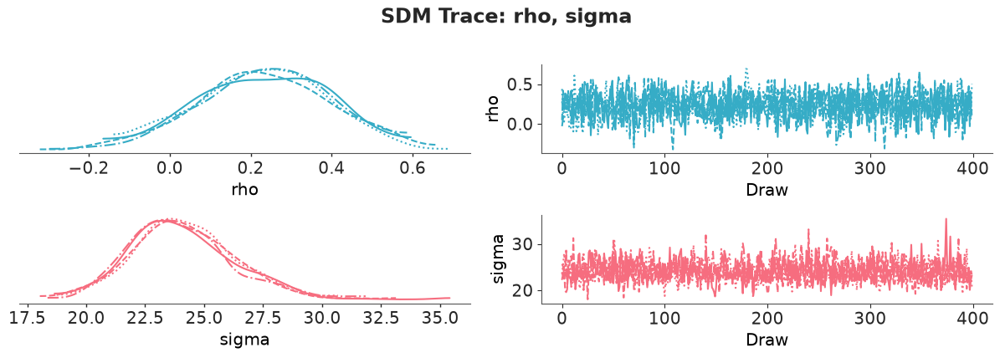
The error-side combination (SDEM)¶
Model:
Interpretation:
Neighbor covariates matter directly (through \(WX\)),
and unmodeled shocks are spatially correlated (through \(u\)).
sdem, summary_sdem, effects_sdem = fit_and_report(
SDEM,
formula="price_pp ~ poverty + rev_rating + num_spots + crowded",
data=gdf,
W=W,
)
display(summary_sdem)
display(effects_sdem)
| mean | sd | eti89_lb | eti89_ub | ess_bulk | ess_tail | r_hat | mcse_mean | mcse_sd | |
|---|---|---|---|---|---|---|---|---|---|
| lam | 0.301 | 0.189 | -0.004 | 0.590 | 1483.235 | 993.926 | 1.001 | 0.005 | 0.004 |
| sigma | 24.180 | 2.165 | 20.934 | 27.845 | 1329.230 | 1398.761 | 1.000 | 0.059 | 0.046 |
| sigma2 | 589.376 | 107.235 | 438.251 | 775.323 | 1329.230 | 1398.761 | 1.000 | 2.943 | 2.661 |
| Intercept | 89.009 | 78.269 | -41.172 | 212.549 | 1390.720 | 1426.438 | 1.002 | 2.099 | 1.408 |
| poverty | -0.552 | 0.424 | -1.238 | 0.151 | 1682.182 | 1614.070 | 1.001 | 0.010 | 0.008 |
| rev_rating | 0.720 | 0.699 | -0.438 | 1.824 | 1543.999 | 1466.087 | 1.001 | 0.018 | 0.012 |
| num_spots | 0.028 | 0.030 | -0.020 | 0.074 | 1593.295 | 1577.263 | 1.001 | 0.001 | 0.001 |
| crowded | -1.048 | 1.151 | -2.907 | 0.706 | 1547.045 | 1458.925 | 1.001 | 0.029 | 0.021 |
| W*poverty | 1.150 | 0.647 | 0.123 | 2.166 | 1499.967 | 1497.810 | 1.002 | 0.017 | 0.013 |
| W*rev_rating | -1.048 | 0.866 | -2.449 | 0.304 | 1429.124 | 1497.581 | 1.003 | 0.023 | 0.015 |
| W*num_spots | 0.181 | 0.048 | 0.105 | 0.258 | 1713.560 | 1564.057 | 1.000 | 0.001 | 0.001 |
| W*crowded | -1.939 | 1.873 | -4.897 | 1.041 | 1525.255 | 1535.565 | 1.002 | 0.048 | 0.036 |
| direct | direct_ci_lower | direct_ci_upper | direct_pvalue | indirect | indirect_ci_lower | indirect_ci_upper | indirect_pvalue | total | total_ci_lower | total_ci_upper | total_pvalue | |
|---|---|---|---|---|---|---|---|---|---|---|---|---|
| variable | ||||||||||||
| poverty | -0.552244 | -1.382712 | 0.281997 | 0.21000 | 1.149708 | -0.171702 | 2.399213 | 0.08375 | 0.597464 | -0.556919 | 1.618356 | 0.2450 |
| rev_rating | 0.719829 | -0.640564 | 2.083917 | 0.28125 | -1.047850 | -2.778731 | 0.605146 | 0.22875 | -0.328021 | -1.969267 | 1.333889 | 0.6925 |
| num_spots | 0.027885 | -0.031377 | 0.082776 | 0.32500 | 0.181410 | 0.086375 | 0.276689 | 0.00000 | 0.209295 | 0.131271 | 0.289414 | 0.0000 |
| crowded | -1.048359 | -3.304984 | 1.152006 | 0.36250 | -1.939294 | -5.721373 | 1.742119 | 0.29875 | -2.987654 | -6.485063 | 0.251654 | 0.0675 |
az.plot_forest(sdem.inference_data)
display(diagnostics_table(sdem.inference_data, ["lam", "beta", "sigma"]))
show_trace(sdem.inference_data, ["lam", "sigma"], "SDEM Trace: lam, sigma")
| mean | sd | ess_bulk | ess_tail | r_hat | |
|---|---|---|---|---|---|
| lam | 0.301 | 0.189 | 1483.235 | 993.926 | 1.001 |
| beta[Intercept] | 89.009 | 78.269 | 1390.720 | 1426.438 | 1.002 |
| beta[poverty] | -0.552 | 0.424 | 1682.182 | 1614.070 | 1.001 |
| beta[rev_rating] | 0.720 | 0.699 | 1543.999 | 1466.087 | 1.001 |
| beta[num_spots] | 0.028 | 0.030 | 1593.295 | 1577.263 | 1.001 |
| beta[crowded] | -1.048 | 1.151 | 1547.045 | 1458.925 | 1.001 |
| beta[W*poverty] | 1.150 | 0.647 | 1499.967 | 1497.810 | 1.002 |
| beta[W*rev_rating] | -1.048 | 0.866 | 1429.124 | 1497.581 | 1.003 |
| beta[W*num_spots] | 0.181 | 0.048 | 1713.560 | 1564.057 | 1.000 |
| beta[W*crowded] | -1.939 | 1.873 | 1525.255 | 1535.565 | 1.002 |
| sigma | 24.180 | 2.165 | 1329.230 | 1398.761 | 1.000 |
/tmp/ipykernel_9259/4086335195.py:11: UserWarning: The figure layout has changed to tight
plt.tight_layout()
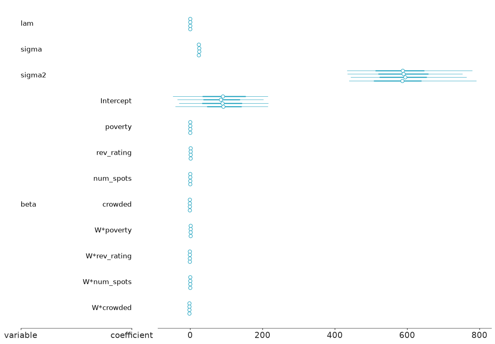
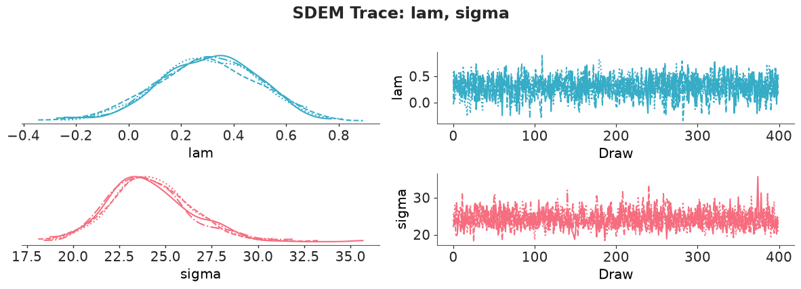
Check the chains before comparing anything¶
Bayesian estimation of spatial models has a well-known efficiency
pitfall: the spatial dependence parameter \(\rho\) (or \(\lambda\)) often
mixes slowly, so a chain that looks converged in its point estimate
can still produce posterior credible intervals that are 10–12 % too
narrow because the sampler has not visited the tails enough times
[Wolf et al., 2018]. The
spatial_mcmc_diagnostic helper checks effective sample size, sampler
yield, \(\hat{R}\), and HPDI stability for the spatial parameter and
warns when any threshold is violated.
from neighbayes.diagnostics import spatial_mcmc_diagnostic
# Run on the SDM (most parameters; both rho and impact summaries depend on it)
report = spatial_mcmc_diagnostic(sdm, emit_warnings=False)
report.to_frame()
| ess_bulk | ess_tail | r_hat | mcse_mean | yield_pct | hpdi_drift_pct | adequate | |
|---|---|---|---|---|---|---|---|
| parameter | |||||||
| rho | 1354.211668 | 1167.08695 | 0.998866 | 0.004502 | 84.638229 | 2.512796 | True |
Let the tests pick the specification¶
Every fitted model can test for the spatial terms it leaves out. The tests are
Lagrange-multiplier (score) tests, which need only the fit you already have:
model.spatial_diagnostics() runs the ones that apply to that model, and
model.spatial_diagnostics_decision() reads them and recommends a model.
A fitted model that leaves out two terms has a plain and a robust test for each. SAR leaves out the neighbors’ covariates \(WX\theta\) and the error process \(\lambda Wu\); OLS leaves out both and the lag \(\rho Wy\) as well. A plain test is valid when the other term is absent. A robust test stays valid when the other term is present, and pays for that in power. So the decision reads them in order:
Neither plain test rejects: keep the model.
One rejects: add that term.
Both reject: add the term whose robust test rejects; if both or neither do, the one with the smaller robust p-value.
This is the specific-to-general strategy of Anselin et al. (1996), the one
spreg’s stge_classic implements. You fit the recommended model and ask
again, until the tests stop rejecting. The p-values here are Bayesian: each
statistic is evaluated at the posterior mean, and its posterior spread gives
the credible interval beside it.
def read_tests(model, alpha=0.05):
"""Show a fitted model's LM tests and say which reject."""
diag = model.spatial_diagnostics()
rejecting = diag.index[diag["p_value"] < alpha].tolist()
name = type(model).__name__
print(f"{name}: tests rejecting at {alpha}: {', '.join(rejecting) or 'none'}")
print(
f"{name}: recommended model: "
f"{model.spatial_diagnostics_decision(alpha=alpha, format='model')}"
)
return diag[["statistic", "df", "p_value", "ci_lower", "ci_upper"]].round(3)
Start from OLS¶
The OLS tests ask whether the outcome, the errors or the neighbors’ covariates carry spatial dependence. A lone rejection points to the SAR, SEM or SLX. When the lag and the error both reject, their robust pair decides, and the \(WX\) question waits for the SAR or SEM fit. When the lag and \(WX\) both reject, Koley and Bera’s robust pair decides: \(WX\) robust to the lag (Robust-LM-WX), and the lag robust to \(WX\), which at the OLS fit is the error test. The lag’s score there is the error’s score plus a fixed combination of the \(WX\) scores, which is also why the two joint tests reported beside the tree are one statistic.
read_tests(ols)
OLS: tests rejecting at 0.05: LM-Lag, LM-WX, LM-SDM-Joint, LM-SLX-Error-Joint, Robust-LM-Lag, Robust-LM-Error, Robust-LM-WX
OLS: recommended model: SLX
| statistic | df | p_value | ci_lower | ci_upper | |
|---|---|---|---|---|---|
| test | |||||
| LM-Lag | 6.543 | 1 | 0.011 | 2.983 | 13.848 |
| LM-Error | 1.705 | 1 | 0.192 | 0.480 | 11.547 |
| LM-WX | 15.895 | 4 | 0.003 | 8.463 | 30.514 |
| LM-SDM-Joint | 17.601 | 5 | 0.003 | 9.374 | 33.851 |
| LM-SLX-Error-Joint | 17.601 | 5 | 0.003 | 10.135 | 38.443 |
| Robust-LM-Lag | 10.441 | 1 | 0.001 | 0.135 | 18.551 |
| Robust-LM-Error | 5.604 | 1 | 0.018 | 0.009 | 11.134 |
| Robust-LM-WX | 11.058 | 4 | 0.026 | 5.715 | 21.429 |
ols.spatial_diagnostics_decision()
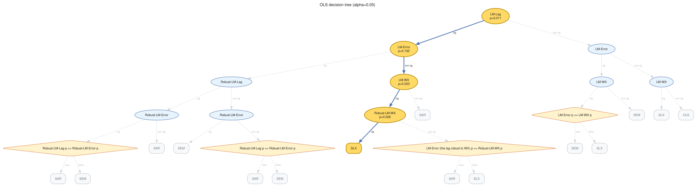
Refit, and ask again¶
The OLS tree names the model to fit next, and that model tests the terms it still leaves out:
the SAR, the neighbors’ covariates (towards the SDM) and the error process (towards SARAR, a SAR with spatial errors, which neighbayes does not fit);
the SLX, the lag (towards the SDM) and the error process (towards the SDEM);
the SEM, the lag (towards SARAR) and the neighbors’ covariates (towards the SDEM);
the SDM and SDEM, one term each, whose test decides whether to go on to the general nesting model (GNS).
The walk ends at the first model whose tests do not reject. The cell below follows the recommendations through the models fitted above and draws each tree it consults.
def walk(start, fitted, alpha=0.05, show=True):
"""Follow the recommendations from ``start`` through the fitted models."""
model, path = start, [type(start).__name__]
while True:
nxt = model.spatial_diagnostics_decision(alpha=alpha, format="model")
if nxt == path[-1]:
break
if nxt not in fitted:
path.append(f"{nxt} (not fitted here)")
break
model = fitted[nxt]
path.append(nxt)
if show:
print(f"--- at the {nxt} fit ---")
display(read_tests(model, alpha))
display(model.spatial_diagnostics_decision(alpha=alpha))
if show:
print(" → ".join(path))
return path
fitted = {"SLX": slx, "SAR": sar, "SEM": sem, "SDM": sdm, "SDEM": sdem}
path = walk(ols, fitted)
--- at the SLX fit ---
SLX: tests rejecting at 0.05: none
SLX: recommended model: SLX
OLS → SLX
| statistic | df | p_value | ci_lower | ci_upper | |
|---|---|---|---|---|---|
| test | |||||
| LM-Lag | 1.549 | 1 | 0.213 | 0.596 | 3.507 |
| LM-Error | 0.781 | 1 | 0.377 | 0.132 | 6.911 |
| Robust-LM-Lag-SDM | 2.419 | 1 | 0.120 | 0.003 | 22.956 |
| Robust-LM-Error-SDEM | 1.650 | 1 | 0.199 | 0.003 | 28.299 |
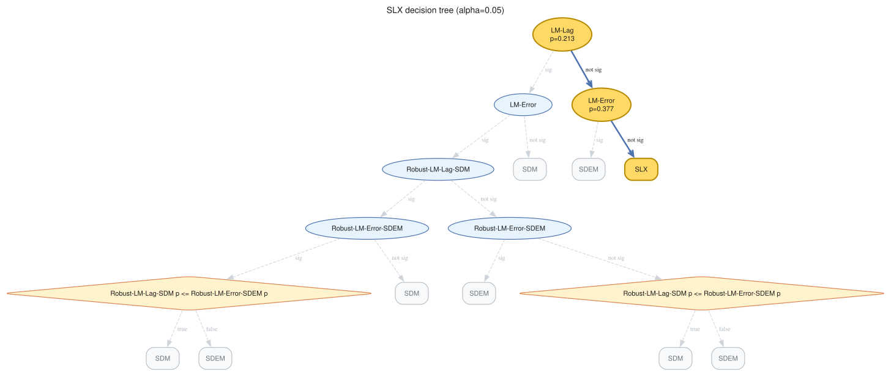
Compare what you have fitted¶
# Collect all fitted models for comparison
model_dict = {
"OLS": ols,
"SLX": slx,
"SAR": sar,
"SEM": sem,
"SDM": sdm,
"SDEM": sdem,
}
idata_dict = {name: m.inference_data for name, m in model_dict.items()}
Bayes factors¶
The LM tests are misspecification tests: each asks whether a fitted model has left spatial dependence behind. A Bayes factor asks something else, how well a model fits overall. It compares marginal likelihoods, the probability of the data under each model averaged over its prior:
Because the average is over the prior, a coefficient the data do not need costs its model: the prior spreads probability over values the data rule out. This is the Bayesian Occam’s razor.
For these six Gaussian models the marginal likelihood reduces to a
two-dimensional integral, so method="quadrature" computes it exactly, with no
Monte Carlo error and no fit. Bridge sampling (method="bridge") estimates the
same quantity from the posterior draws, and is what models without that form
use; BIC approximates it as if each prior held one observation’s worth of
information. The table gives each model’s log marginal likelihood relative to
the best, so 0 marks the best model and \(-\log 10 \approx -2.3\) a Bayes factor
of 10 against.
Bayes factor |
Evidence (Kass & Raftery, 1995) |
|---|---|
1 – 3 |
Anecdotal |
3 – 10 |
Moderate |
10 – 30 |
Strong |
30 – 100 |
Very strong |
> 100 |
Extreme |
from neighbayes.diagnostics import post_prob
log_bf = {
method: bayes_factor_compare_models(model_dict, method=method, log=True)
for method in ("quadrature", "bridge", "bic")
}
exact = log_bf["quadrature"]
best = exact.sum(axis=1).idxmax() # the row that beats every column
comparison = pd.DataFrame({m: bf[best] for m, bf in log_bf.items()})
comparison["posterior probability"] = post_prob(
comparison["quadrature"].to_numpy(), model_names=list(comparison.index)
)
comparison.sort_values("quadrature", ascending=False).round(3)
/tmp/ipykernel_9259/543508755.py:4: UserWarning: Bridge sampling with 1600 posterior samples for 'OLS' may yield imprecise marginal-likelihood estimates. A conservative rule of thumb is 40,000+ samples (Gronau, Singmann, & Wagenmakers, 2017).
method: bayes_factor_compare_models(model_dict, method=method, log=True)
| quadrature | bridge | bic | posterior probability | |
|---|---|---|---|---|
| SAR | 0.000 | 0.000 | 0.000 | 0.612 |
| SEM | -0.704 | -0.662 | -2.528 | 0.303 |
| OLS | -2.091 | -2.068 | -2.079 | 0.076 |
| SLX | -5.088 | -5.089 | -0.689 | 0.004 |
| SDEM | -5.252 | -5.231 | -2.732 | 0.003 |
| SDM | -5.689 | -5.690 | -2.242 | 0.002 |
bayes_factor_compare_models returns the full matrix of pairwise log Bayes
factors. Each entry is the row model over the column model, so a positive
entry favors the row; the column above is the matrix’s column for the best
model.
exact.round(2)
| OLS | SLX | SAR | SEM | SDM | SDEM | |
|---|---|---|---|---|---|---|
| OLS | 0.00 | 3.00 | -2.09 | -1.39 | 3.60 | 3.16 |
| SLX | -3.00 | 0.00 | -5.09 | -4.38 | 0.60 | 0.16 |
| SAR | 2.09 | 5.09 | 0.00 | 0.70 | 5.69 | 5.25 |
| SEM | 1.39 | 4.38 | -0.70 | 0.00 | 4.98 | 4.55 |
| SDM | -3.60 | -0.60 | -5.69 | -4.98 | 0.00 | -0.44 |
| SDEM | -3.16 | -0.16 | -5.25 | -4.55 | 0.44 | 0.00 |
Rank only the models that pass their tests¶
Because the two measure different things, they need not agree. A model can fit well overall and still leave residual spatial dependence (in the outcome, the errors or the neighbors’ covariates), and its estimates are then biased or inefficient. So a model that fails an LM test cannot be trusted however its Bayes factor ranks it. Use the tests to screen the models and the Bayes factors to rank the ones that pass.
The cell below lists each fitted model’s rejecting tests beside its log marginal likelihood, and picks the best model among those that pass.
alpha = 0.05
def rejecting(model):
diag = model.spatial_diagnostics()
return ", ".join(diag.index[diag["p_value"] < alpha]) or "none"
screen = pd.DataFrame(
{
"rejecting tests": {name: rejecting(m) for name, m in model_dict.items()},
"log ML vs best": exact[best],
}
)
passing = screen.index[screen["rejecting tests"] == "none"]
print(f"Best by Bayes factor alone: {best}")
print(
f"Best among the models that pass their tests: "
f"{screen.loc[passing, 'log ML vs best'].idxmax() if len(passing) else 'none'}"
)
print(f"End of the walk: {path[-1]}")
screen.sort_values("log ML vs best", ascending=False).round(3)
Best by Bayes factor alone: SAR
Best among the models that pass their tests: SLX
End of the walk: SLX
| rejecting tests | log ML vs best | |
|---|---|---|
| SAR | LM-WX | 0.000 |
| SEM | LM-Lag, LM-WX | -0.704 |
| OLS | LM-Lag, LM-WX, LM-SDM-Joint, LM-SLX-Error-Join... | -2.091 |
| SLX | none | -5.088 |
| SDEM | none | -5.252 |
| SDM | none | -5.689 |
See how the spatial parameter moves across models¶
This cell compares posterior means/intervals for the spatial scalar where present:
rhoin SAR/SDMlamin SEM/SDEM
# Compare spatial parameters across models
spatial_rows = []
for name, model, var in [
("SAR", sar, "rho"),
("SEM", sem, "lam"),
("SDM", sdm, "rho"),
("SDEM", sdem, "lam"),
]:
if var in model.inference_data.posterior:
summary = az.summary(model.inference_data, var_names=[var], round_to=3)
summary.insert(0, "model", name)
spatial_rows.append(summary)
pd.concat(spatial_rows)
| model | mean | sd | eti89_lb | eti89_ub | ess_bulk | ess_tail | r_hat | mcse_mean | mcse_sd | |
|---|---|---|---|---|---|---|---|---|---|---|
| rho | SAR | 0.418 | 0.138 | 0.184 | 0.635 | 1519.033 | 1069.591 | 1.003 | 0.004 | 0.003 |
| lam | SEM | 0.480 | 0.184 | 0.170 | 0.749 | 1374.669 | 1141.918 | 1.001 | 0.005 | 0.004 |
| rho | SDM | 0.231 | 0.166 | -0.042 | 0.494 | 1354.212 | 1167.087 | 0.999 | 0.005 | 0.004 |
| lam | SDEM | 0.301 | 0.189 | -0.004 | 0.590 | 1483.235 | 993.926 | 1.001 | 0.005 | 0.004 |
Where to go next¶
How to run Bayesian LM specification tests — the tests used above, in full
How to run spatial block cross-validation — an out-of-sample check on the specification you chose
Supported Models — every model and its equations